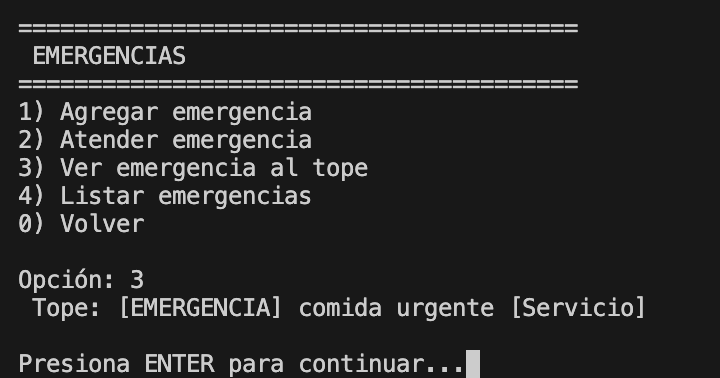

Primero se muestra el sistema de gestion y te las opciones que puedes hacer dentro de este codigo
Si das enter podras ver el menu principal donde podras ver las emergencias atender clientes, gestionar las tareas, ver todo, los empledos y salir

Si introduces "1" podras ver el primer menu de emergencias y si nuevamente introduces la opcion 1 podras agregar una nueva emergencia

Despues si introduces la opcion "2" podras atender la emergencia que esta en el tope y como en este caso solo hay una emergencia pues se atiende esa

Si introduces la opcion 4 podras ver la emergencia del tope que en este caso solo es "comida urgente"
Si introduces la opcion 5 podras ver la lista de emergencias como a continuacion se muestra